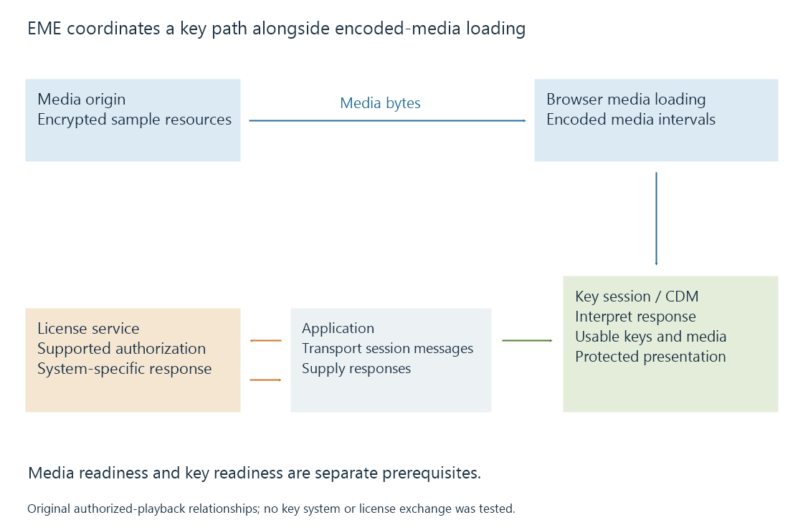

Encrypted Media Extensions (EME) and browser key sessions
Encrypted Media Extensions provides browser APIs for selecting a supported key system and coordinating key sessions needed for encrypted media playback.
Encrypted Media Extensions, or EME, is the browser API layer through which an application works with a supported media key system. It coordinates the protected-playback configuration and the key sessions required for encrypted media.
EME is not itself one DRM product, a media-delivery protocol or a video codec. The application, browser and selected content decryption module have different responsibilities.
Media loading and key acquisition take separate paths
The media player obtains encoded media through its normal supported loading route, possibly using MSE. Protection information identifies what the key system needs to interpret.
In parallel, the application manages a key-system exchange. A key session can produce a message for the application to send to an appropriate service. The response is returned to the session for system-specific interpretation.

The diagram describes authorized playback. It does not depict an application obtaining unrestricted raw keys to use as ordinary decoder options.
Configuration is negotiated before a usable key session
requestMediaKeySystemAccess() asks about a named key system and candidate configurations. These include encoded-media capabilities and relevant session requirements.
A configuration can require properties that the browser/device path cannot supply. Support for unprotected H.264 alone does not answer that negotiation question.
The returned access object can create MediaKeys. The application associates those keys with its media element through setMediaKeys(). Key sessions then belong to that selected key-system context.
| Object or operation | Responsibility |
|---|---|
| MediaKeySystemAccess | An accepted key-system configuration |
| MediaKeys | Key-system context associated with playback |
| MediaKeySession | One session's request/response and key-status lifecycle |
| generateRequest() | Begin the session's request from suitable initialization data |
| message event | Deliver a key-system message to the application |
| update() | Supply a response for the session to process |
These are roles in a lifecycle, not a complete portable license-server implementation. Message contents and server exchanges depend on the key system and service.
The application transports the message
EME does not choose a universal license endpoint or standardize every provider's account and entitlement workflow.
The app receives a session message, communicates it through the supported service integration and passes the resulting response to update(). Network access, application authorization and the key system's interpretation each can fail at their own boundary.
For example, successfully obtaining the media bytes can coexist with an incomplete license exchange. A client waiting for a usable key may therefore stop presenting while its media buffer already contains encrypted intervals.
A useful observation identifies both media readiness and key readiness. Treating every wait as “the video download is slow” loses the separate key-session path.
Key status and session lifetime are observations
The session can expose key-status changes and an expiration value. A usable key, an expired key and an output restriction have different implications.
The application can update controls and diagnostics in response to those changes. A successful HTTP response from a service is not by itself proof that the session accepted it or that all needed keys are usable.
Likewise, completing one key session does not make an unsupported encoded representation decodable. Media capabilities and protection capabilities are cooperating prerequisites.
Persistent sessions retain a different kind of state
The temporary session type and the optional persistent-license type have different storage lifecycles.
Persistent-license support can retain key-session state for later authorized playback. It does not download or retain the movie itself. An offline protected presentation still needs its corresponding local media resources and an application capable of using the persisted session.
The 2017 EME Recommendation establishes the baseline model. The cited level-two document is a W3C Working Draft, so its additions should be distinguished from implemented browser behavior.
See Also
- DRM-protected media and authorized playback paths
- Media Source Extensions (MSE) and scripted media delivery
- Browser media playback and its loading paths
- Browser codec detection and capability predictions
- Offline playback and prepared local media